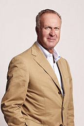
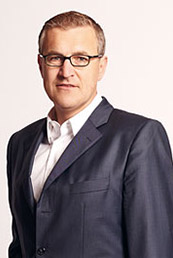
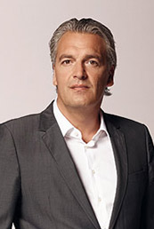

俱乐部 Club
俱乐部 Club

卡尔-海茵茨·鲁梅尼格
董事会主席
作为前世界级前锋与欧洲足球先生，鲁梅尼格本人就曾身披拜仁战袍。
卡尔-海因茨·鲁梅尼格于1955年9月25日生于德国北部小城利普施塔特。1974年由利普施塔特转会到拜仁慕尼黑，并在两年之后成功进入西德国家队，直到1984年转会到意大利国际米兰。在他职业生涯的全部310场德甲比赛中，他打入了162个进球，并取得无数殊荣：洲际杯冠军（1976年），欧洲冠军杯冠军（1975年，1976年），德国德甲联赛冠军（1980年，1981年），德国杯冠军（1982年，1984年），欧洲足球锦标赛冠军（1980），两次世界杯亚军（1982年，1986年）和欧洲最佳球员。
这位拜仁的传奇队长在1991年至2002年担任拜仁副主席。作为拜仁集团公司主席，他主要负责公司规划，沟通，公司国际与国内机构法人代表，协调监事会和董事会，媒体权益，新媒体，IT以及管理球迷与球迷俱乐部。除此之外鲁梅尼格自2008年以来还担任欧洲俱乐部协会主席。

扬-克里斯蒂安·德雷森
董事会副主席
扬-克里斯蒂安·德雷森主要负责公司财务及核算事务。
2013年2月扬-克里斯蒂安·德雷森接替卡尔·霍普夫纳成为拜仁慕尼黑新董事，2014年2月起德雷森成为拜仁慕尼黑副主席。
德雷森于1967年9月4日出生于德国北部的奥里希/东弗里斯兰，已婚并有两个儿子。大学企业管理专业毕业后，德雷森成为巴伐利亚联合银行管培生，之后进入德国联合抵押银行并晋升为董事。除此之外，雷德森还在瑞士联合银行以及德国巴伐利亚银行担任过几年的董事，在公司和私人业务中取得巨大成功。目前他在拜仁慕尼黑的主要负责财务管理，票务，公司内部事务，IT，法务，人事及拜仁公司的商务活动。
安德烈斯·荣
董事
安德烈斯•荣主要负责赞助、活动及商品经营等相关事务。
安德烈斯·荣已在拜仁将近20年。在此之前这位大学体育专业毕业的体育经理就职于德国自行车协会，在1995年担任世界自行车锦标赛的经理一职。安德烈斯·荣于1961年11月23号在吕德斯海姆出生，在拜仁慕尼黑的第一份工作是体育广告，之后领导赞助商与活动等事务，2002年担任主管，2009年成为公司授权代表。
2010年7月1号安德烈斯·荣成为董事会副董事，负责拜仁的赞助，商品销售授权，国际关系以及安联球场的营销和公关等方面工作。荣另外还担任德国足球联赛协会赞助商事务发言人，及体育赞助商协会（VSA）主席。

约尔格·瓦克
董事
约尔格·瓦克负责拜仁俱乐部的国际化与战略事务
自2013年7月1日起，约尔格·瓦克成为拜仁慕尼黑负责国际化战略事务的董事。1967年10月17日出生的瓦克在来到德国纪录冠军之前曾在欧洲最大的线上博彩运营商Bwin德国分公司担任过七年总裁，也曾经是体育顾问公司SportCASA的经理。在这之前他还曾执掌过Sport1有限公司并在bild.de担任过项目总监。学生时代，瓦克在卡尔斯鲁厄大学主修文学和体育学，他的第一份职业是体育记者。
瓦克是2014年在纽约成立的拜仁慕尼黑（美国）有限公司的顾问委员会成员，同时也是2016年9月在上海成立的拜仁慕尼黑市场营销（上海）有限公司的董事会主席。